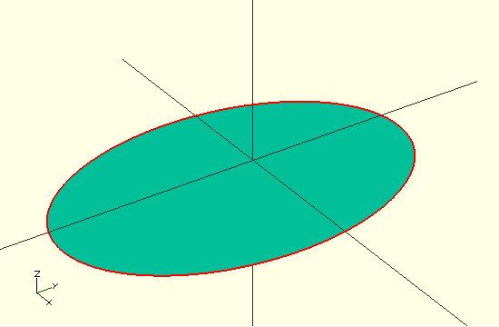

Using list comprehension, a parametric equation can be calculated at a number of points to approximate many curves, such as the following example for an ellipse (using polygon()):
sma = 20; // semi-minor axis
smb = 30; // semi-major axis
polygon(
[ for (a = [0 : 5 : 359]) [ sma * sin(a), smb * cos(a) ] ]
);
e advanced examples, useful idioms and use-cases for the list comprehension syntax.

Created with the Personal Edition of HelpNDoc: Free EPub producer